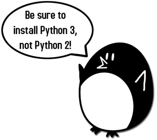
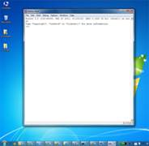

|
|
Chapter 1 |
Installing Python |

Topics Covered In This Chapter:
· Downloading and installing the Python interpreter
· How to use this book
· The book’s website at http://inventwithpython.com
Hello! This book teaches you how to program by making video games. Once you learn how the games in this book work, you’ll be able to create your own games. All you’ll need is a computer, some software called the Python interpreter, and this book. The Python interpreter is free to download from the Internet.
When I was a kid, a book like this one taught me how to write my first programs and games. It was fun and easy. Now as an adult, I still have fun programming and I get paid for it. But even if you don’t become a computer programmer when you grow up, programming is a useful and fun skill to have.
Computers are incredible machines, and learning to program them isn’t as hard as people think. If you can read this book, you can program a computer. A computer program is a bunch of instructions that the computer can understand, just like a storybook is a bunch of sentences understood by the reader. Since video games are nothing but computer programs, they are also made up of instructions.
To instruct a computer, you write a program in a language the computer understands. This book teaches a programming language named Python. There are many different programming languages including BASIC, Java, JavaScript, PHP, and C++.
When I was a kid, BASIC was a common first language to learn. However, new programming languages such as Python have been invented since then. Python is even easier to learn than BASIC! But it’s still a serious programming language used by professional programmers. Many adults use Python in their work and when programming for fun.
The games you’ll create from this book seem simple compared to the games for Xbox, PlayStation, or Nintendo. These games don’t have fancy graphics because they’re meant to teach coding basics. They’re purposely simple so you can focus on learning to program. Games don’t have to be complicated to be fun.
Downloading and Installing Python
You’ll need to install software called the Python interpreter. The interpreter program understands the instructions you’ll write in the Python language. I’ll just refer to “the Python interpreter software” as “Python” from now on.
Important Note! Be sure to install Python 3, and not Python 2. The programs in this book use Python 3, and you’ll get errors if you try to run them with Python 2. It is so important I’ve added a cartoon penguin in Figure 1-1 to tell you to install Python 3 so you do not miss this message.

Figure 1-1: An incongruous penguin tells you to install Python 3.
On Windows, download the Python installer (the filename will end with .msi) and double-click it. Follow the instructions the installer displays on the screen to install Python, as listed here:
· Select Install for All Users and then click Next.
· Install to the C:\Python34 folder by clicking Next.
· Click Next to skip the Customize Python section.
On Mac OS X, download the .dmg file that’s right for your version of OS X from the website and double-click it. Follow the instructions the installer displays on the screen to install Python, as listed here:
· When the DMG package opens in a new window, double-click the Python.mpkg file. You may have to enter the administrator password.
· Click Continue through the Welcome section and click Agree to accept the license.
· Select HD Macintosh (or whatever name your hard drive has) and click Install.
If you’re running Ubuntu, you can install Python from the Ubuntu Software Center by following these steps:
· Open the Ubuntu Software Center.
· Type Python in the search box in the top-right corner of the window.
· Select IDLE (using Python 3.4), or whatever is the latest version.
· Click Install. You may have to enter the administrator password to complete the installation.
Starting IDLE
IDLE stands for Interactive DeveLopment Environment. The development environment is like word processing software for writing Python programs. Starting IDLE is different on each operating system.
On Windows, click the Start button in the lower left corner, type “IDLE” and select IDLE (Python GUI).
On Mac OS X, open the Finder window and click on Applications. Then click Python 3.4. Then click the IDLE icon.
On Ubuntu or Linux, open a terminal window and then type “idle3”. You may also be able to click on Applications at the top of the screen. Then click Programming and IDLE 3.
The window that appears when you first run IDLE is the interactive shell, as shown in Figure 1-2. You can enter Python instructions into the interactive shell at the >>> prompt and Python will perform them. After displaying instruction results, a new >>> prompt will wait for your next instruction.
 

Figure 1-2: The IDLE program’s interactive shell on Windows, OS X, and Ubuntu Linux.
How to Use this Book
Most chapters in this book will begin with a sample run of the chapter’s featured program. This sample run shows you what the program looks like when you run it. The parts the user types in are shown as bold print.
Type the code for the program into IDLE’s file editor yourself, rather than download or copy/paste it. You’ll remember programming better if you take the time to type in the code.
Line Numbers and Spaces
When typing the source code from this book, do not type the line numbers at the start of each line. For example, if you see this in the book:
9. number = random.randint(1, 20)
You do not need to type the “9.” on the left side, or the one space immediately following it. Just type it like this:
number = random.randint(1, 20)
Those numbers are there only so that this book can refer to specific lines in the program. They are not a part of the actual program’s source code.
Aside from the line numbers, enter the code exactly as it appears. Notice that some of the lines of code are indented by four or eight spaces. Each character in IDLE is the same width, so you can count the number of spaces by counting the number of characters on the line above or below.
For example, the indented spaces here are marked with a ▪ black square so you can see them:
while guesses < 10:
▪▪▪▪if number == 42:
▪▪▪▪▪▪▪▪print('Hello')
Text Wrapping in This Book
Some instructions are too long to fit on one line on the page and will wrap around to the next line. When you type this code, enter it all on one line without pressing enter. You can tell when a new instruction starts by looking at the line numbers on the left. The example below has only two instructions:
1. print('This is the first instruction! xxxxxxxxxxxxxxxxxxxxxxxxxxxxxxxxxxxxxx
xxxxxxxxxxxx')
2. print('This is the second instruction, not the third instruction.')
The first instruction wraps around and makes it look like three instructions in total. That’s only because this book’s pages aren’t wide enough to fit the first instruction on one line.
Finding Help Online
This book’s website is at http://inventwithpython.com. You can find several resources related to this book there. Several links in this book use the invpy.com domain name for shortened URLs.
The website at http://reddit.com/r/inventwithpython is a great place to ask programming questions related to this book. Post general Python questions to the LearnProgramming and LearnPython websites at http://reddit.com/r/learnprogramming and http://reddit.com/r/learnpython, respectively.
You can also email me your programming questions at al@inventwithpython.com.
Keep in mind there are smart ways to ask programming questions that help others help you. Be sure to read the Frequently Asked Questions sections these websites have about the proper way to post questions. When asking programming questions, do the following:
· If you are typing out the programs in this book but getting an error, first check for typos with the online diff tool at http://invpy.com/diff. Copy and paste your code into the diff tool to find any differences from the book’s code in your program.
· Explain what you are trying to do when you explain the error. This will let your helper know if you are on the wrong path entirely.
· Copy and paste the entire error message and your code.
· Search the Web to see whether someone else has already asked (and answered) your question.
· Explain what you’ve already tried to do to solve your problem. This tells people you’ve already put in some work to try to figure things out on your own.
· Be polite. Don’t demand help or pressure your helpers to respond quickly.
Asking someone, “Why isn’t my program working?” doesn’t tell them anything. Tell them what you are trying to do, the exact error you are getting, and your operating system and version.